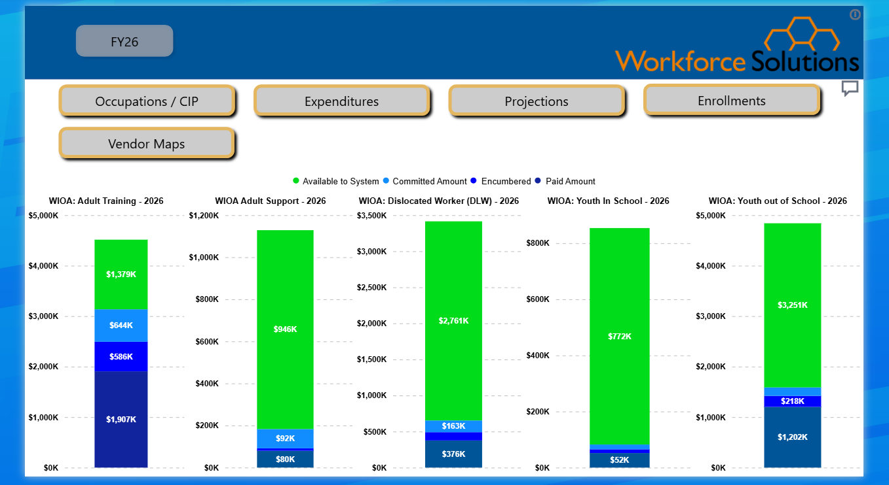
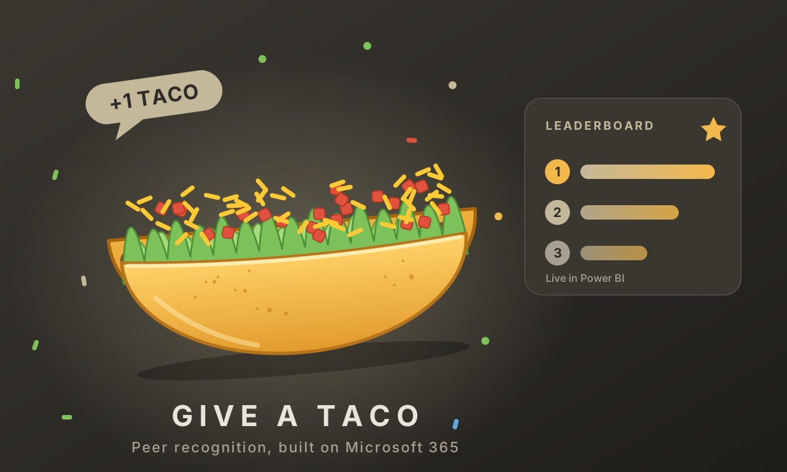

Projects
A selection of things I've built, analyzed, or contributed to.

Fund Management Dashboard
A Power BI dashboard that tracks $13.5M in workforce development funds across 13+ federal and state programs. Built two ways: a live Salesforce connector, and an ELT pipeline from the Salesforce API through a Microsoft Fabric Lakehouse and Warehouse, with Python and SQL transformations.

Give a Taco: Peer Recognition
An in-house peer-recognition app built entirely on Microsoft 365, with zero software spend and no extra licenses. A Forms submission triggers Power Automate flows that log to SharePoint, block self-awards, post Teams celebrations at milestones, and refresh a live Power BI leaderboard.
100+ users across departments · 1,000+ tacos given · $0 cost

Project Title
A short description of what this project is, what problem it solves, and what tools or skills you used.